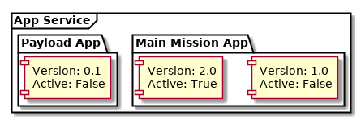

Kubos Applications Service¶
The Kubos applications service is responsible for monitoring and managing all mission applications for a system.
The service is capable of tracking multiple versions of each application, allowing users to easily upgrade and rollback their mission applications when necessary.
Whenever a new application is registered with the service, its manifest file and all other files in the specified directory are copied into the service’s application registry. By default, this registry is stored under /home/system/kubos/apps.

When an application is started by the service, a monitoring thread is spawned to watch the new process and record its eventual return code.
Communicating with the Service¶
The applications service uses the same HTTP+GraphQL communication scheme as the other services.
Users will send GraphQL queries and mutations to the service’s HTTP listener port. The port number can be found in the system’s configuration file in /etc/kubos-config.toml
Querying¶
Registered Applications¶
A current list of all available versions of all registered applications can be generated by using the registeredApps query.
It has the following schema:
{
registeredApps(name: String, version: String, active: Boolean) {
[
active: Boolean!,
app {
name: String!,
executable: String!,
version: String!,
author: String!,
config: String!
}
]
}
}
The registered applications can be filtered by using the input parameters:
name: Returns app entries which have the specified application nameversion: Returns app entries which have the specified version numberactive: WhenTrue, returns only the “active” entry of a particular application, i.e, the version of the application which will be used when the application is run
Queries return the following fields:
active: Specifies whether this particular version of the application will be run when thestartAppmutation is run with the given application nameapp: Details of the application entryname: The name of the applicationexecutable: The path to the file which will be executed when thestartAppmutation is run for this applicationversion: The particular version number of this application entryauthor: The creator/owner of this application entryconfig: The configuration file which will be passed to the application when it is run
An example query requesting the name, version number, and active status of all registered applications:
{
registeredApps {
active,
app {
name,
version
}
}
Using the example registry in the previous diagram, the data returned by the service would be:
{
"registeredApps": [
{
"active": false,
"app": {
"name": "main-mission",
"version": "1.0"
}
},
{
"active": true,
"app": {
"name": "main-mission",
"version": "2.0"
}
},
{
"active": true,
"app": {
"name": "payload-app",
"version": "0.1"
}
},
]
}
To list all available versions of a specific application, specify the app’s name as an input parameter.
For example:
{
registeredApps(name: "main-mission") {
app {
name,
version
}
}
}
Application Execution Status¶
The appStatus query can be used to fetch information about currently running applications, as
well as information about the last time an application was run.
It has the following schema:
{
appStatus(name: String, version: String, running: Boolean) {
name: String!,
version: String!,
startTime: String!,
endTime: String,
running: Boolean!,
pid: Int,
lastRc: Int,
lastSignal: Int,
args: Vec<String>,
config: String
}
}
The applications can be filtered by using the input parameters:
name: Returns app entries which have the specified application nameversion: Returns app entries which have the specified version numberrunning: Returns app entries which are/aren’t actively running
Queries return the following fields:
name: Application nameversion: Version of the application which was/is runningstartTime: The time at which the application was started, in ISO 8601 formatendTime: If the application has finished executing, the time at which execution endedrunning: Indicates if the application is currently executingpid: If the application is still running, the process ID assigned to the running applicationlastRc: If the application has finished executing, the return code emitted by the application. Mutually exclusive withlastSignallastSignal: If the application has finished executing and was stopped by a signal, the signal which was sent to the application. Mutually exlusive withlastRcargs: Any command-line arguments which were passed to the application executable. If no arguments were given, this field will not be returnedconfig: The non-default service configuration file which will be referenced by the application. If the default configuration is being used, this field will not be returned
One app entry may exist per unique name/version/run-level combination.
If a particular app entry is currently executing the pid field will be available.
If the entry has finished executing, then the endTime and lastRc/lastSignal fields will
be available.
Registering¶
Once an application has been written and compiled, the application and its accompanying manifest.toml file
should be either transferred to a new directory or .tgz archive file on the OBC.
This file transfer can be done using the file transfer service.
The application may be split into multiple files (which is useful for large Python apps), however,
the name of the initial file which should be called for execution must exactly match the name
property in the manifest file.
The application can then be registered with the applications service using the register mutation by specifying
the directory or .tgz archive containing the application files.
The service will copy all of the contents from the specified path or archive into the apps registry. Once registered, users may delete the original application files.
For example:
mutation {
register(path: "/home/kubos/payload-app") {
success,
errors,
entry {
active,
app {
name,
version
}
}
}
}
The success response field is a boolean value which reflects whether the registration process
completed successfully.
If true, then the entry field will contain the registration information about the newly
registered application.
If false, then the entry field will be empty, and the errors field will contain an
error message detailing what went wrong.
De-Registering¶
The uninstall mutation can be used to either uninstall a single version of an application, or
to uninstall all versions of an application.
The mutation takes one required argument, name, specifying the name of the application to be
removed.
There is also one optional argument, version, which specifies a particular version of the
application which should be uninstalled.
If version is omitted, then all known versions of the application are uninstalled.
The mutation returns two fields:
success- Indicating the overall result of the uninstall operationerrors- Any errors which were encountered during the uninstall process
For example:
mutation {
uninstall(name: "main-mission", version: "1.1") {
success,
errors
}
}
If the version of the application being uninstalled is also the current active version, the setVersion mutation should be used in order to manually roll back to a prior version first. If the active version is not changed, then the system will not know which version to use the next time the application is started.
If the version of the application being uninstalled is currently running, it will be automatically
stopped using the SIGTERM signal, followed by the more harsh SIGKILL signal two seconds
later.
We recommend using the killApp mutation to gracefully stop the application prior
to making an uninstall request.
Starting an Application¶
To manually start an application, the startApp mutation can be used.
The mutation should specify the name of the application to start. Only once instance of an application may be running at a time.
The optional config input argument allows a custom config.toml file to be passed to the
application. If the file is in the app’s directory when it is registered, then it may be specified
with a relative path. Otherwise, we recommend that you use an absolute file path.
The optional args input argument allows additional arguments to be passed through to the
underlying application.
The mutation will return three fields:
success- Indicating the overall result of the operationerrors- Any errors which were encountered while starting the applicationpid- The PID of the started application. This will be empty if any errors are encountered
For example:
mutation {
startApp(name: "mission-app", config: "/home/kubos/config.toml", args: ["-m", "safemode"]) {
success,
errors,
pid
}
}
Under the covers, the service receives the mutation and identifies the current active version of the
application specified.
It then calls that version’s binary, passing along any additional arguments specified with args.
If the application immediately fails, the errors field will contain a message with the
application’s return code.
If an instance of the application is currently running, the startApp request will be rejected
and an error will be returned.
Passing Additional Arguments¶
To pass additional arguments to the underlying application, the args input argument can be used.
For example:
mutation {
startApp(name: "mission-app", args: ["--verbose", "--release"]) {
success
}
}
Under the covers, the application would be called like so:
mission-app --verbose --release
Stopping an Application¶
Any application which has been started by the app service may be stopped with the killApp
mutation.
Two instances of an app may be running simultaneously, one with the “OnBoot” logic, and one with the
“OnCommand” logic.
As a result, the killApp mutation has two required input arguments: the name and run level
associated with the app which should be stopped.
Users may optionally specify the signal value
which should be sent to the application.
By default, the app service sends SIGTERM (signal value 15).
This is the default when running Linux’s kill command, and allows the application to do any
necessary cleanup before gracefully shutting down.
The mutation returns two fields:
success- Indicating the overall result of the kill operationerrors- Any errors which were encountered during the kill process
For example:
mutation {
killApp(name: "main-mission", runLevel: "OnBoot", signal: 2) {
success,
errors
}
}
Note
If you have any long-running applications which you expect will be stopped with the killApp
mutation, we recommend that you program logic to catch the SIGTERM signal and then do all
necessary cleanup before safely exitting.
As long as the application does not explicitly handle the signal, its execution will end and the
lastSignal value in the corresponding app monitoring entry will be updated
with the signal value.
Upgrading¶
Users may register a new version of an application without needing to remove the existing registration.
To do this, they will re-use the register mutation.
However, the version number specified in the manifest.toml file must be unique.
If an application with the specified name and version already exists, the registration will be
rejected.
mutation {
register(path: "/home/kubos/payload-app") {
active,
app {
name,
version
}
}
}
Changing Versions¶
Users may swap between different versions of an application by using the setVersion mutation.
This is useful for manually rolling back to an older version of an application prior to uninstalling the current version.
mutation {
setVersion(name: "mission-app", version: "1.0") {
success,
errors
}
}
Customizing the Applications Service¶
The configuration for the applications service is saved in /etc/kubos-config.toml. This file can be editted to add or modify the following fields:
[app-service.addr]ip- The IP address that the service will useport- The port GraphQL requests should be sent to
[app-service]registry-dir- (Default: /home/system/kubos/apps) The directory under which all registry entries should be stored